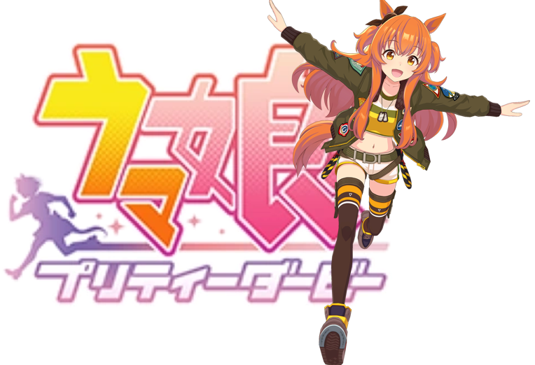
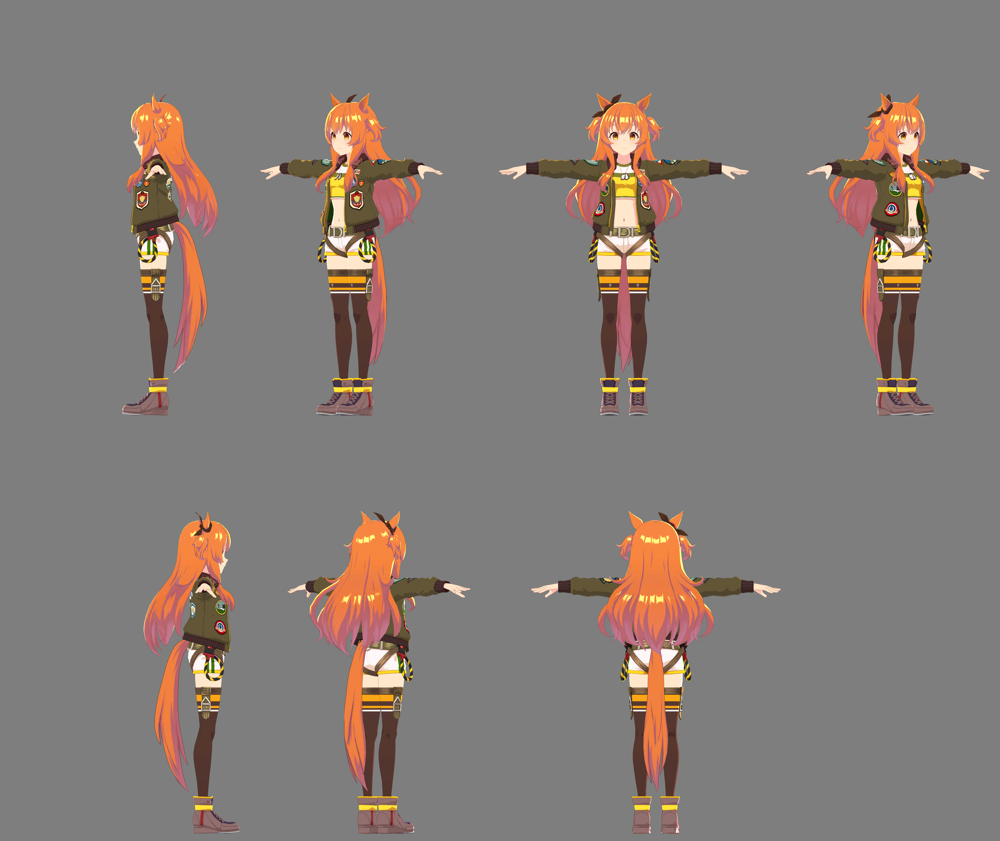
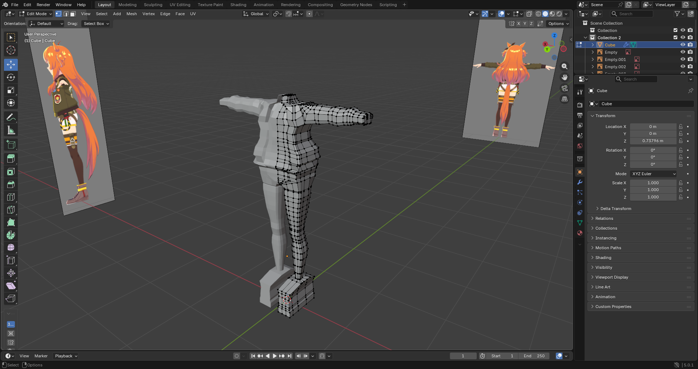
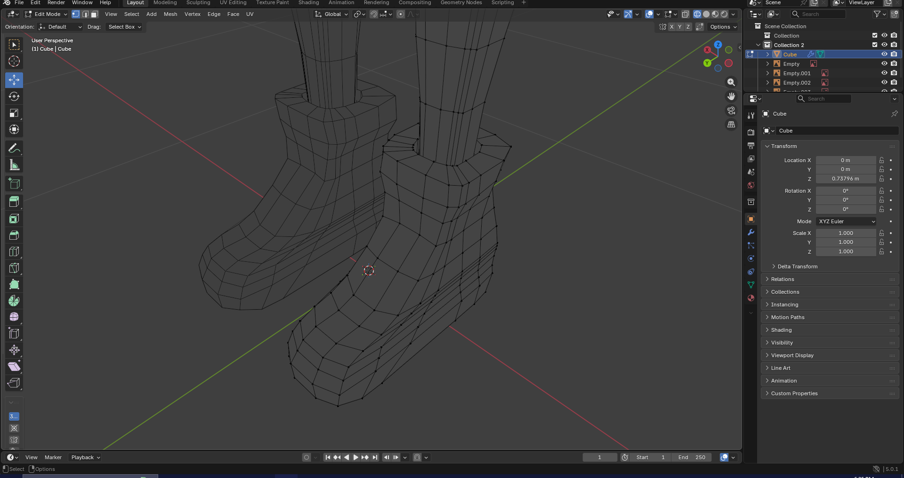
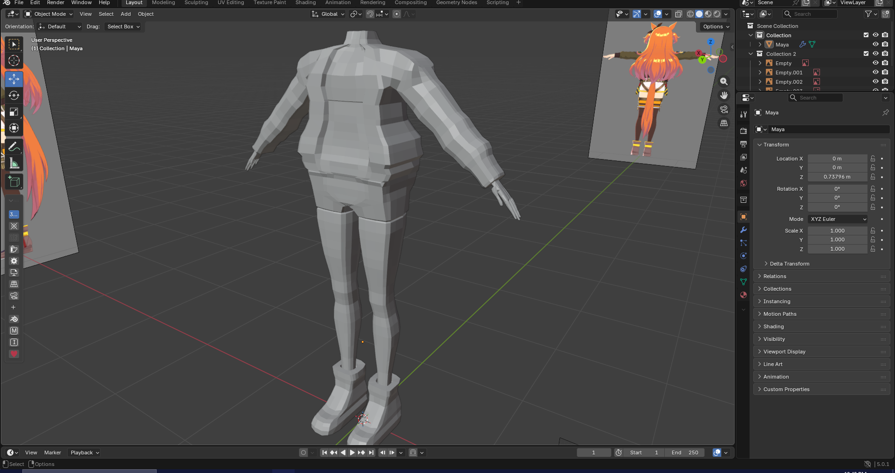
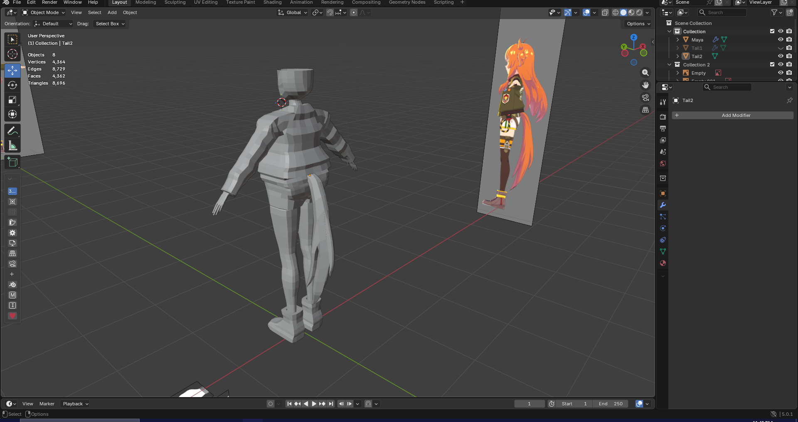
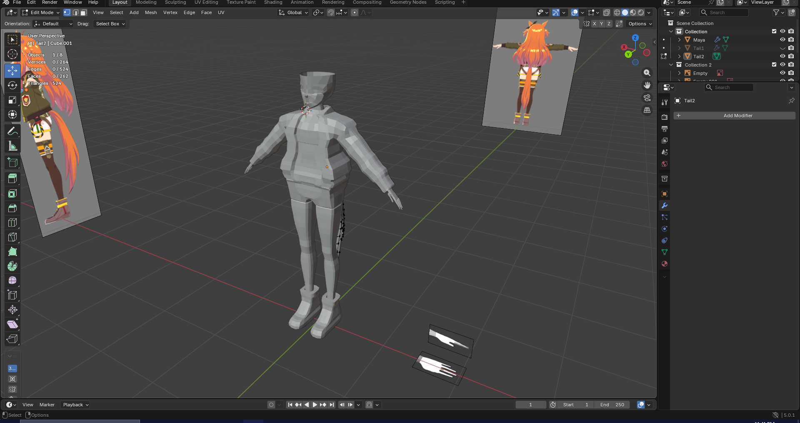
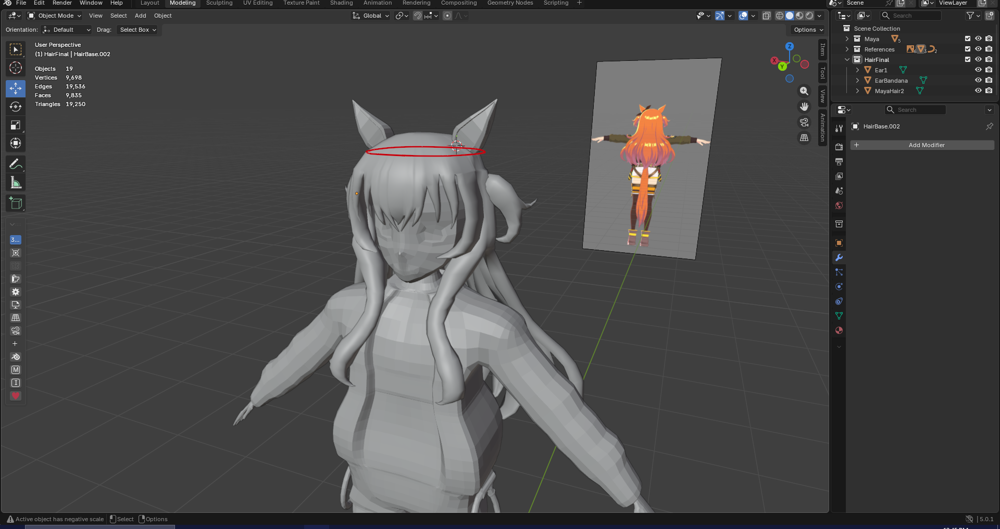
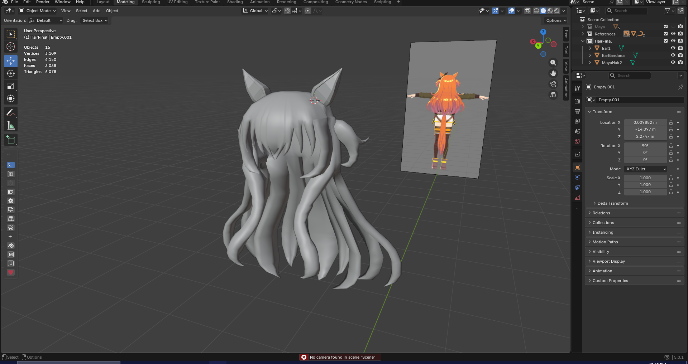

I decided I would make Mayano Top Gun from Umamusume.

The character sheet used for reference.

The initial blockout of her body.
The mirror modifier is a lifesaver.

The earliest version of her boots.
My favorite part of the whole model!.

The completed body before smoothing.
It will recieve many, many more adjustments.

Her first face!
Scary!

Her first tail.
It wouldn't look decent until her THIRD tail later. Her proportions also look horribly off.

Adding her hands.
This is the worst part of her model. Hands are hard!

We finally add her hair.
Iconic!

This took a long time.
Many, many, many hours and half a dozen different scrapped attempts, techniques, and tutorials were used in the process.